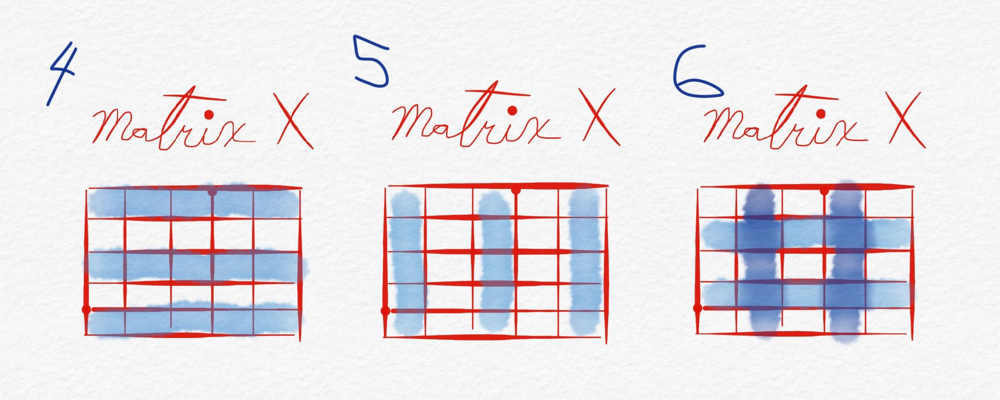
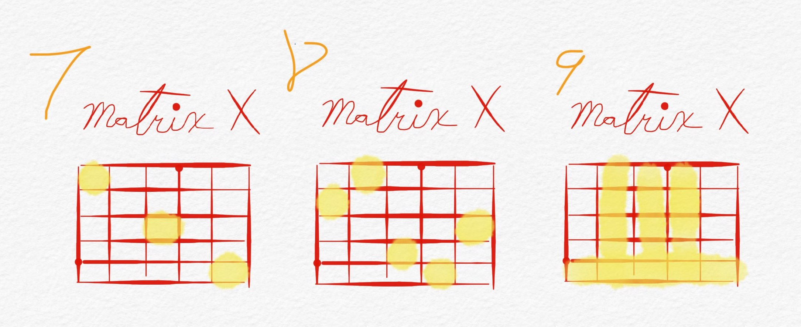

Numpy stands for Numerical Python and is one of the core libraries for a large chunk of the Python ecosystem of libraries related to data analysis. Since it is so important for the entire data analytics/science ecosystem, a lot of the libraries and packages we will see in later lessons will most likely depend, in one way or another, on NumPy.
This versatile library allows to do fast and efficient computations with arrays and matrices as well as simple-to-complex mathematical calculations. One of the reasons why it is so powerful and fast is that it is written on top of the C programming language. This means that computations with NumPy are executed much closer to the hardware of our computers than the regular lists in Python. We will compare the speed of both, lists and numpy arrays, later in this lesson to better understand the speed differences between the two.
Main Characteristics of NumPy:
Many built-in mathematical functions
Efficient computations with n-dimensional arrays (n is the number of dimensions)
Very fast
It allows for broadcasting. This is the equivalent computation of a loop but without the loop. Meaning, for a lot of tasks with large datasets, you won't need to create a loop
NumPy arrays use less computer memory than built-in Python equivalent data structures
Excellent tool for generating random data. This will be useful if you would like to simulate different scenarios in your analysese
Let's beging by importing NumPy with its industry alias (remember, an alias is the nickname you give to the modules/libraries/packages you import). The community using Python for data analysis has adopted the convention of importing NumPy as np. Therefore, to make collaborating easier and save us typing unnecessary letters often, we will follow this convention as well.
1
importnumpyasnp
Once you import numpy, and any other package for that matter, you can always check the version you are using with .__version__.
Find a package online, install it with pip, and check its version as described above.
Here are some cool packages you could search for and install
- altair
- plotnine
- bokeh
- statsmodel
- dask
- scikit-learn
- scrapy
- plotly
- seaborn
1
# Install it here
1
# Import it here
1
# Check its version here
Arrays in numpy are similar to lists but they differ in that they can only contain one data type. If you have ever added a number to a column, row, or both in Excel then you have already worked with arrays and matrices. If you have ever written a list of different things you needed to buy at the supermarket, as well as the quantity of each item, then you have already created a two-dimensional array or matrix.
Thinking of numpy arrays as the components of a spreadsheet will help solidify your understanding of these concepts.
Index
Date
Item
Quantity
1
12-Apr-20
toilet paper
1000
2
20-Apr-20
chicken
10
3
27-Apr-20
toilet paper
500
4
27-Apr-20
cereal
2
5
27-Apr-20
bread
1
We can start working with arrays by passing in a list of data to the np.array() method from our numpy module. These methods take in regular Python lists and transform them immediately into their own numpy class.
1234
# Create your first arrayfirst_array=np.array([25,40,50,16,10,19,32,27,11])print(first_array,type(first_array))
You have already seen the native Python function, range(), which creates a range of values up to but not including the stoping point, and with an optional step in between. The equivalent of this function in numpy is the np.arange() (pronounced 'a' 'range' not 'arange'). The nice thing about the numpy's version is that we can add an additional parameter that lets us pick the data type of the array. Even thought you might not have to worry about this until you tackle more advaced problems with larger datasets, the difference between a data type of 8 bits (int8) and one of 64 (int64) can be a drastic one at best, and this could in turn decrease the runtime of a computation in a very noticeable way.
Let's use both, range() and np.arange() to see how they work.
1234
# since range() is a lazy function, we have to wrap it around a list() to print its valuesprint(list(range(10)))# create array of 10 numbers from 0 to 9print(list(range(0,10)))# create array of 10 numbers from 0 to 9print(list(range(0,10,2)))# create array of even numbers from 0 to 9. Stepwise operation!
12345
# NumPy exampleprint(np.arange(10))# create array of 10 numbers from 0 to 9print(np.arange(10,dtype='int8'))# create array of 10 numbers from 0 to 9 and with integers of 8 bitesprint(np.arange(0,10,dtype='int32'))# create array of 10 numbers from 0 to 9 and with integers of 32 bitesprint(np.arange(0,10,2,dtype='int64'))# create array of 5 even numbers from 0 to 9. Stepwise operation and with integers of 64 bites
NumPy comes with its own attributes for checking the shape, data type, and dimensions of your arrays. This can come in handy when working and sharing data with others who might not be able to tell upon fast inspection, how these previously mentioned characteristics (shape, dtype, and number of dimensions) are shown in your data.
When we use the attribute .shape on an array, we get back a tuple with the rows as the first element and the columns as the second element. The .dtype attribute tells us the data type of the array or matrix, and the .ndim attribute gives us the dimensions.
Note: Remember tuples can, but don't have to, be surrounded by parethesis but they always have to have at least one comma , separating at least one element. e.g. (6, 7) or 6, 7 or (5,) are all tuples.
1
first_array
123
print(first_array.dtype)# data typeprint(first_array.shape)# (rows, columns)print(first_array.ndim)# dimension
Our first variable earlier, first_array, was initiated on the spot as a numpy array from what looked a lot like a list, and that is exactly what it would have been should it have been outside the numpy array function. If we are working with a list of a single data type and we would like to convert it into a numpy array, we could do so in the following way.
12345
some_list=[23,12,9,20,15,34]some_array=np.array(some_list)print(f"This some_list is of type {type(some_list)}")print('-'*30)print(f"And some_array is of type {type(some_array)}")
To test your understanding of printing in Python, try to unpack what is happening insinde the print statement above. Could we write that same one line in a cleaner way? 🤔
You can also assign a specfic data type to almost all arrays you construct with NumPy.
123
#array with dtypesfloat_array=np.array([3.,5.2,9.4,4.8,10.1],dtype='float16')print(float_array,float_array.dtype)
You can also create numpy arrays by passing multiple lists (or lists of lists), this increases the flexibility of the data type rule as each sub array inside a matrix can have its own data type. Remember that numpy only accepts one data type per array.
In addition to lists, tuples and sets can also be passed into a numpy array.
123456
# this is a matrix of multiple listsmatrix_list=[[1,2,3,4],[20,22,27,15],[11,14,19,7]]matrix_list
1234
matrix_array=np.array([[1,2,3,4],# this is a matrix of multiple arrays[5,6,7,8],# even though it looks just like a bunch of lists[9,8,7,6]])# it is treated differently by numpymatrix_array
123
# this is a matrix created from the list of lists abovendarray_lists=np.array(matrix_list)ndarray_lists
# this is a numpy matrix of multiple arrays with stringsmatrix_text=np.array([["Hi","this","is","a"],["matrix","that","only","contains"],["text","and","no","numbers"]])matrix_text
If you are ever unsure of the number of dimmensions a numpy array has, you can always check this with the .ndim attribute. Also, whenever you see a list of lists, it helps to think of it as an Excel spreadsheet (i.e. a 2-dimensional grid of information).
1
print(matrix_text.ndim)
We can also select (i.e. slice and dice) elements from an array in the same fashion as with lists, but with an additional functionality that allows us to pinpoint exactly what we want by selecting columns and rows within the same bracket of an array in multiple dimensions.
Here is an example of how slicing data out of a numpy array works.
array[startstep, startstep]
Let's see what the construct of array[rows,columns] looks like by starting with the rows first.
12345678
print(f"Our first array --> {first_array} has {first_array.ndim} dimension(s)")print("-"*40)print(f"We can select one element --> {first_array[0]}")# select an element first rowprint("-"*40)print(f"More than one element with regular indexing --> {first_array[:5]}")# select elements from 0 to 4print("-"*40)print(f"And more than one element with negative indexing --> {first_array[2:-3]}")# select elements from the 3rd to the third to last# negative indexing starts from the end without using 0
Create a NumPy matrix with the two lists above and assign it to a variable called mixed_data.
Select a word from the matrix and change it to ice cream. Assign it to a variable called icy.
Select a number from the matrix and change it to 777. Assign it to a variable called lucky_number.
1
# list of nums
1
# list of words
1
# mixed matrix
1
# change a word
1
# change a number
To select elements from a matrix we need to have a comma , separating our data. The rows are on the left and the columns will be on the right. The colon : still allows us to select a range, and adding an additional colon : allows us to select elements with steps in between.
Being able to select columns becomes specially useful when we have different data in our arrays. Think about our shoping list again (a mix of arrays), when we go grocery shopping, we will need to select specific elements from our list as we go through the isles of the supermarket.
matrix[startstep, startstep]
1
matrix_array
1
print(matrix_array[1,3])# element on second row and second column
1
print(matrix_array[:,3])# all rows of column 2
1
print(matrix_array[:,:])# all rows and columns i.e. a full copy
1
print(matrix_array[:,:2])# everything in the first two columns
Let's clear a bit the distinction between the concepts we have covered. Selecting one element of an array/matrix can be considered indexing, and selecting a group of elements from an array/matrix can be thought of as slicing your data.
Before we jump into some exercises, let's go over a few more examples. We will start by createing a 5 by 5 matrix and call it matrix_x.
Let's figure out how to select the following rows and columns from Matrix X.
1
matrix_x
1234
# Matrix X number 1# We want all rows in the first columnmatrix_x[:,0]
1234
# Matrix X number 2# We want the first row and all columnsmatrix_x[0,:]
1234
# Matrix X number 3# We want the intersection of the first column and the first rowmatrix_x[0,0]
Let's make things a bit more interesting by scaling the complexity of how we slice our matrix X.

12
# Let's print matrix x againmatrix_x
1
matrix_x.shape
1234
# Matrix X number 4# We want all columns and every other rowmatrix_x[::2,:]
1234
# Matrix X number 5# We want all rows and every other columnmatrix_x[:,::2]
1234
# Matrix X number 6# We want every other row and column starting from the second one of eachmatrix_x[1::2,1::2]
You can also add values to these numbers and reasign the new values to a new variable.
12
temp_matrix=matrix_x[1::2,1::2]+5temp_matrix
For our last example, let's explore how to get values at a specific point in our matrix.

123
# Let's print matrix x againmatrix_x
1234
# Matrix X number 7# We want the first, third, and fifth element of the first, third, and fifth column-row combinationmatrix_x[[0,2,4],[0,2,4]]
1 2 3 4 5 6 7 8 910
# Matrix X number 8# We want the elements at the:# second row and first column# first row and second column# fourth row and third column# fifth row and fourth column# third row and fifth columnmatrix_x[[1,0,3,4,2],[0,1,2,3,4]]
We have already seen how to create numpy arrays of different dimmensions, however, numpy has even more functionalities that allow us to generate data on the fly either as a one-dimensional array or multiple.
Here are some of the most important functions to generate data with numpy.
np.arange(start, end, step, dtype='something') will create a one-dimensional array
.reshape(4, 5) this method can be applied to almost any array and it will reshape it into a matrix or other n-dimensional array
np.zeros(nums, dtype='something') creates an array full of zeros
np.ones((rows, columns), dtype='something') creates an array/matrix full of ones
np.random.random(num) creates an array of random values from 0 to 1. If passed in a tuple such as (3, 5), it will crate a matrix of random values
np.linspace(start, end, nums_in_between) creates an array of linearly-spaced numbers from the start point to the end with a user-defined amount of numbers in between
np.random.normal(mean, std, size) draws random numbers from a normal distribution with the mean, standard deviation, and size of your choosing
np.random.randint(start, end, shape) creates random integers
np.full(shape, num_you_like) creates an array or matrix with the same number all accross
np.empty() creates a completely empty array of a size and shape of your choosing
You might be wondering, why would I use all of these data generating functions if I will always have data for my use case? The answer is that no model is perfect, and sometimes, a bit of simulation can save you a lot of time in your work or within a project. In addition, there are analyses that are way too costly or harmful to run a test on and collect new data from. For example, flight routes, weather, car crashes, etc., and simulating scenarios in these use-cases would save a lot of time, money, effort, and even lives.
Let's go over some examples of each.
123
importmatplotlib.pyplotasplt%matplotlibinline
123
# let's create a one dimmensional arrayarr1=np.arange(0,50,0.5,dtype='float')arr1
123
# we will plot our array against the same array but with every element raised to the power of 2plt.plot(arr1,(arr1**2))plt.show()
Let's now turn our array into a matrix while keeping in mind that the product of the rows and columns of a matrix should be equal to the lenght of the array. Hence, if our array has 50 values, our columns times our rows has to be equal to 50 (10x5, 2x25).
1
len(arr1)
12
matrix1=arr1.reshape(10,10).copy()matrix1
1
arr1.reshape(20,5)
1
arr1.reshape(5,20)
1
arr1.reshape(25,4)
You might be wondering why we used the .copy() above and the reason is that the data numpy keeps in memory for any given array doesn't change when the pointer changes (i.e. a new variable assignment) unless we create a copy. So essentially arr1 and matrix one would be sharing the same data and whathever happens to matrix1 would happen to arr1 and vice-versa.
Let's visualise this with an example.
123
# Let's create an array with 10 zeroszeros_arr=np.zeros(10,dtype='int8')zeros_arr
1 2 3 4 5 6 7 8 9101112
print(f"Here is the original array --> {zeros_arr}")# here is the original arrayprint('-'*55)new_zeros=zeros_arr# here is our new copynew_zeros[4]=5# let's change the value at index 4print(f"Here is the new, altered array --> {new_zeros}")# let's print the modified oneprint('-'*55)print(f"Here is the original again --> {zeros_arr}")# and let's print the original as well
Now that we know that arrays can be fixed in memory and shared with other varables, or be copied to another variable. Let's continued exploring our data generation functions.
123
# the ones and only : )matrix2=np.ones((4,5),dtype='float32')matrix2
12
# have now become the lucky seven'smatrix2+6
123
# how about having lot's of tiny spaces in between two numbersarr2=np.linspace(-10,10,100)arr2
123
# what would the cosine of our previous array and the original array look like when plottedplt.plot(arr2,np.cos(arr2))plt.show()
1234
# everyone needs random integers every now and then# from 10 to 50 give me 100 randomsarr3=np.random.randint(low=0,high=50,size=100,dtype='int8')arr3
12
plt.plot(sorted(arr3))plt.show()
123
# distributions are everywhere and the normal ones tend to follow us (hint: the weather 🌤🌧🌞)arr4=np.random.normal(loc=12,scale=6,size=200)arr4
12
plt.hist(arr4,bins=30,color='green')plt.show()
123
# these are completely empty even though they appear not to bearr5=np.empty((3,5),dtype='float32')arr5
12
# to look at the shape of this array we usearr5.shape
123
# we can fill in the rows and/or columns with new valuesarr5[0]=(5**2)# first row will have 25sarr5[0]
123
arr5[1]=(25/5)# second row will have 5sarr5[2]=17# third row only 17sarr5
123
# Let's create a matrix with a number we likefilled_matrix=np.full(shape=(3,5),fill_value=17,dtype='int8')filled_matrix
To be able to perform element-wise operations with 2 or more lists we need to do it either in a loop, a list comprehension, or add the numbers manually. With numpy, you can do element-wise operations without ever writing a loop, so long as your arrays are always of the same length or have a matching structure for between matrices and arrays. This last part is out of the scope of this course but it is important to learn about n-dimensional array operations to do more advanced work as you progress throughout your career.
Let's begin by adding two arrays.
1234
array1=np.array([3,2,1])array2=np.array([9,5,7])array1+array2# this addition will happen element-wise
What happens when we try to add python lists with other lists?
Notice what happens when we try to add two arrays with different lenghts.
12345
# If the arrays do not have the same lenght, numpy will give us an errorarray1=np.array([3,2,1,6])array2=np.array([9,5,7])array1+array2
If the arrays don't have the same length, numpy will give us an error.
We can also do element-wise operations on arrays using the rest of the mathematical functions we saw on lesson 1.
123
# let's create 2 more arraysarray3=np.array([3.7,2.3,1.8])array4=np.array([9.1,5,7.4])
1
print(array3*array4)# multiplication
1
print(array3/array4)# division
1
print(array3**array4)# exponent
1
print(array3-array4)# subtraction
You also get the same functionality with a single number, only this time the single number will be applied to all elements in your array. This is also called broadcasting, and it is what we saw in the speed comparison at the beginning of this section.
12
# notice the 10print((array3*array4)*10)# multiplication
1
print((array3/array4)/20)# division
1
print((array3**array4)**2)# exponent
1
print((array3-array4)-4)# subtraction
1
print(array3*3)# multiplication
Can you guess what would happen to a python lists when we try to multiply it by a scaler?
1
[1,2,3]*3
1
print(array3/10)# division again
1
print(array3**3)# exponentiation again but with 1 number only
If we wanted to make the one dimensional array above a two-dimensional one, e.g. a matrix, we could do it with the method .reshape() we say earlier, which takes as arguments the dimensions our new matrix should have. Please remember, the first number is always the rows and the second is always the columns.
What we have to keep in mind though is that the reshaped version has to match the amount of element in the array. For example, a one dimensional array with 20 elements can only be reshaped into a matrix of:
- 2 rows and 10 columns (2, 10)
- 10 rows and 2 columns (10, 2)
- 4 rows and 5 columns (4, 5)
- 5 rows and 4 columns (5, 4)
The .reshape() method does not work inplace so we would have to assign the new matrix to a new variable and chain the method .copy() to it if we want our reshaped matrix to be unique.
Now that we have learned how to create arrays, there are many operations we can do on arrays to try to understand the information they contain. For example, we can add all of their numbers, get their range, max and min values, and even learn how many even/odd numbers are in the array.
The kind of operations described above can also be referred to as descriptive statistics, which one of the branches of the field of Statistics. It gives us tools to interrogate the data and pull out some facts from it.
You can also think of descriptive statistics a regular analysis of data where no predictions of fancy modeling takes place. The importance of descriptive statistics in the data analytics/science cycle is monumental. It helps us examine our data and, more often than not, find inconsistencies that we had not previously encountered and will have to deal with.
Some useful statistics you should always begin with are:
Sometimes, we will need to combine different arrays containing valuable information for a particular analysis. NumPy has three particular ways in which it allows us to do this:
np.vstack() allows you to stack multiple arrays on top of one another, i.e. vertically or row-wise
np.hstack() allows you to stack arrays next to each other, i.e. horizontally or column-wise
np.concatenate() gives you both stacking options, vertical and horizontal stacking
Let's have a look at all three of these.
12345
x=np.arange(0,20).reshape(5,4)y=np.linspace(0,9,20).reshape(5,4)z=np.ones(20).reshape(5,4)print("Here is the row length of \n x --> %i, \n y --> %i, and \n z --> %i"%(len(x),len(y),len(z)))
123
# Horizontal Stack of x and yh_level1=np.hstack([x,y])h_level1
123
# horizontal stack of all three but with an operation on the thirdh_level2=np.hstack([h_level1,z+2])h_level2
In the previous lesson, we explored conditional statements with if, elif's, and else constructors and noticed how powerful these functionalities can be when we try to evaluate statements based on logical conditions. NumPy allows us to take advantage of these logical statements to create powerful filtering methods.
One of the most common tasks of a data analyst is to dig deep into the data to figure out interesting relationships and patterns that could help us answer important questions. One way to achieve this is through filtering out data based on a given condition or set of conditions. NumPy allows us to do this quite efficiently and we will learn how to do this in this section.
Say we have an array of 1 year worth of temperatures in farenheit and we want to know how many days of the year the temperature was higher than 70 (a nice and probably sunny day 🌤).
After we have our array of temperatures for the year, we can move on to creating the condition we want.
12
nice_days_mask=(year_temp>70)nice_days_mask
Notice that we now have an array of booleans where the True's corresponde to the days where the temperature was greater than 70 and the False's correspond to the days where it was equal to or lower than 70. Now, if we pass our new variable of booleans as an index to our year_temp array, we will get back only the values we want (i.e. the ones that evaluated to True in the condition above).
Now we can move on to answer some useful questions about our new filtered data. For example, we can examine the max temperature experienced during the nice days, or we could check out the average to understand what was the most common temperature during these days.
1
print("The Average temperature on nice days was %i F ☀️"%np.mean(nice_days))
1
print("The Max temperature on nice days was %i F 😎"%np.max(nice_days))
1
print("The Min temperature on nice days was %i F 🌥"%np.min(nice_days))
You do not need to create these computation and assign them to a new variable, instead, you can pass them directly to the array in question the same way you would do your regular slicing. Let's look at an example together.
1
year_temp[0:30]# regular slicing
1
year_temp[year_temp<80]# masking directly
We can also combine multiple logical evaluations and pass them as masks to our arrays. For example, imagine we are only interested in the days where the temperature was less than 80 and greater than 50. If so, we could wrap our comparisons around paretheses (i.e. round brackets) and separate them with the & or | objects in between two or more masks.
12
# get only the days where the temp was less than 80 and greater than 50year_temp[(year_temp<80)&(year_temp>50)]
Lastly, we could create a matrix resembling the days and months for the 360 (data points) days we have in our array. We could then use one of the many numpy aggregation functions to understand what happened in any given months. (We are simulation the weather in a year 😎.)
First, let's reshape this array into a matrix with 30 rows to represent the days in a month and 12 columns to represent the months in a year.
The next step is to create our mask. We are interested in what we consider nice days. Which are days that are not too hot but also not too cold (e.g. not hotter than 100 degrees but also not colder than 70).
123
# create the maskgood_days=(matrix_year>70)&(matrix_year<100)good_days
Lastly, we will use the np.sum(matrix, axis=0) function while making the axis parameter equal to 1 so that numpy knows that we want the operation to pass through the mask matrix column-wise and not row-wise. That way we can count how many days per month throughout the year were within our criteria.
1
np.sum(good_days,axis=0)
There are many other cool tricks you can do with with masking, and we will explore those as we progress throghout the course.
You have learned a great deal today and should be proud of your accomplishments. Let's recap what we have seen thus far.
Lists in Python can be treated as the arrays and matrices that will hold our data for us. They are extremely powerful and versatile data structures and can be used in almost every aspect of the data analytics cycle.
NumPy is a library built on top of the programming language C. This particular characteristic allows it to communicate with the hardware of our machines and run our computations faster than with regular Python code.
When possible, use broadcasting instead of loops in order to optimise your code and run-time.
Generating random data allows us to test models and functions very fast and numpy has a lot of useful methods to generate random data. It has functions such as np.ones, np.random.random, np.linspace, and many more.
Masking is a type of filtering method that allows us to have a closer look at our data. It is, in a way, a similar way of constructing if-else evaluations.
List comprehensions are a type of for loop that gives us the ability to generate a list from repeated commands.

step, start